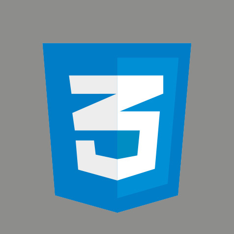

O mnie
Nazywam się Anna Jasica. Mimo, że moja przygoda z front-endem rozpoczęła się niedawno, to już stała się ona moją pasją. Jestem pracowita, cieszy mnie nauka nowych umiejętności i możliwość wdrażania ich w życie. Nie brak mi kreatywności, dlatego dobrze odnajduję się jako programista webowa.
W wolnym czasie gram w planszówki, namawiam bliskich na spacery i chodzę na koncerty.
Umiejętności
